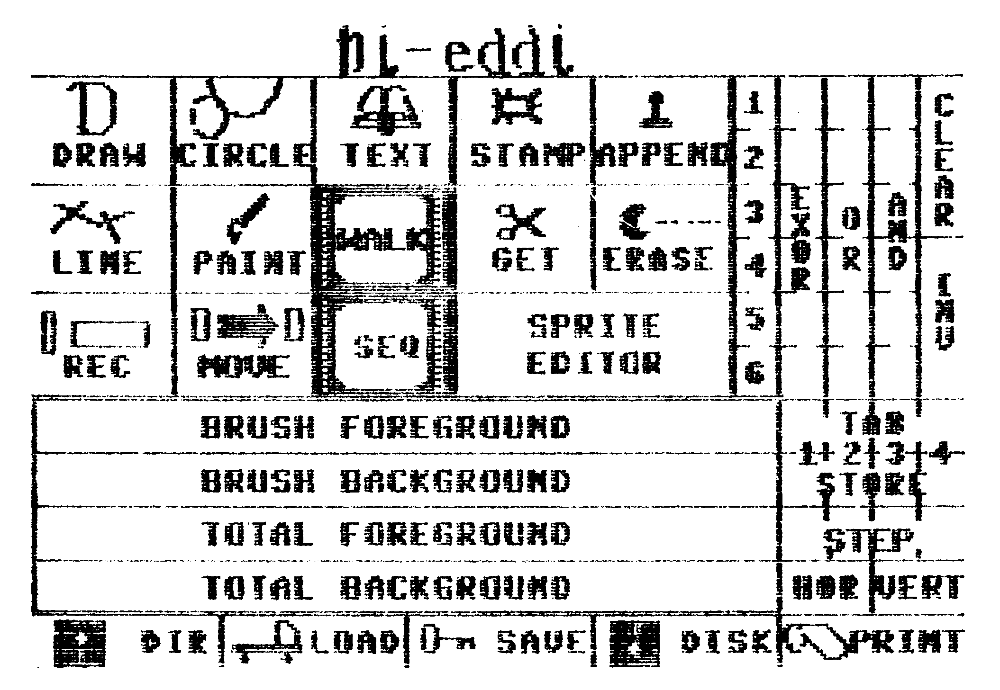

Hardcopy 1520
Mit dem 1520-Plotter können Sie sehr schöne Hardcopies drucken. Voraussetzung dafür ist dieses Programm. Punktreihen werden nicht als einzelne Punkte, sondern als Linie gezeichnet.

Jetzt brauchen Sie nicht mehr auf eine langsame Basic-Hardcopy-Routine zu warten. Denn mit dem hier vorgestellten Programm dauert das Plotten einer Hi-Eddi-Hardcopy (Bild) nur noch durchschnittlich 15 Minuten. Und das, obwohl 64000 Punkte von dem Programm auf ihren Wert überprüft werden.
Nachdem Sie das kurze MSE-Listing abgetippt und das Programm nach dem Wiederladen gestartet haben, kommen Sie in ein Auswahlmenü, in dem Sie vier Unterpunkte anwählen können. Dies sind im einzelnen:
<L> zum Laden eines Grafikbildes. Das Grafikbild muß im normalen Hi-Eddi-Standard abgespeichert sein.
<Z> zum Zeigen des geladenen Bildes. Die jetzt auf dem Bildschirm erscheinende Grafik sieht genauso aus wie das auf dem Plotter entstehende Bild. Alles, was jetzt auf dem Bildschirm schwarz oder in Farbe dargestellt wird, ist auch beim Plotterausdruck in der jeweiligen Stiftfarbe gemalt.
<D> zum Drucken der Grafik. Dieser Punkt sollte erst nach der Kontrolle des Bildes mit dem <Z>-Befehl angewählt werden, damit nicht durch ein eventuell nicht richtig übertragenes oder nicht geladenes Bild 15 Minuten lang Unsinn geplottet wird.
Der letzte Punkt schließlich ist der <Q>-Befehl. Mit ihm wird ein Computer-Neustart ausgeführt und das Programm gelöscht. Die Grafik allerdings bleibt erhalten.
Das Steuerprogramm selbst ist verhältnismäßig lang; es macht etwa 75 Prozent des gesamten Programm-Codes und der Daten aus. Die hohe Länge im Vergleich mit anderen Programmen erklärt sich durch die Tatsache, daß dieses Programm horizontale Linien durchgehend zeichnet. Das bedeutet in der Praxis, daß die von dem Plotter geplotteten Bilder sehr konturenscharf sind und das Ausdrucken eines kompletten HiRes-Bildschirmes mit immerhin 64000 Punkten im Durchschnitt nur 15 Minuten dauert.
Zur Funktion des Steuerprogramms: Es bestimmt jeweils die aktuelle Zeile. Nun fängt das Programm an, diese Zeile soweit mit gesenktem Stift zu plotten, bis gelöschte Pixel auftreten. Dann wird der Stift angehoben, nach der nächsten Position gesucht, die mit gesenktem Stift geplottet werden muß, und so lange eine Linie gezogen, bis entweder wieder ein Leer-Pixel auftritt, der zur erneuten Wiederholung der Plott-Schleife zwingt, oder das Zeilenende erreicht ist. Wenn das der Fall ist, dann fährt der Stift in die linke Randposition zurück, der Plotter macht einen Papiervorschub und die nächste Zeile wird geplottet.
Bei vorhergehender Benutzung von Hi-Eddi ist der Bildschirmausdruck noch einfacher anzufertigen: Bild vorsichtshalber speichern und Hi-Eddi mit <RUN/STOP+RESTORE> verlassen. Jetzt das Hardcopy-Programm laden und starten. Wenn Sie jetzt den Menüpunkt »zeigen« (<Z>) anwählen, erscheint das soeben gemalte Bild.
(Arno Seitzinger/og)